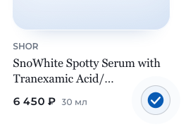
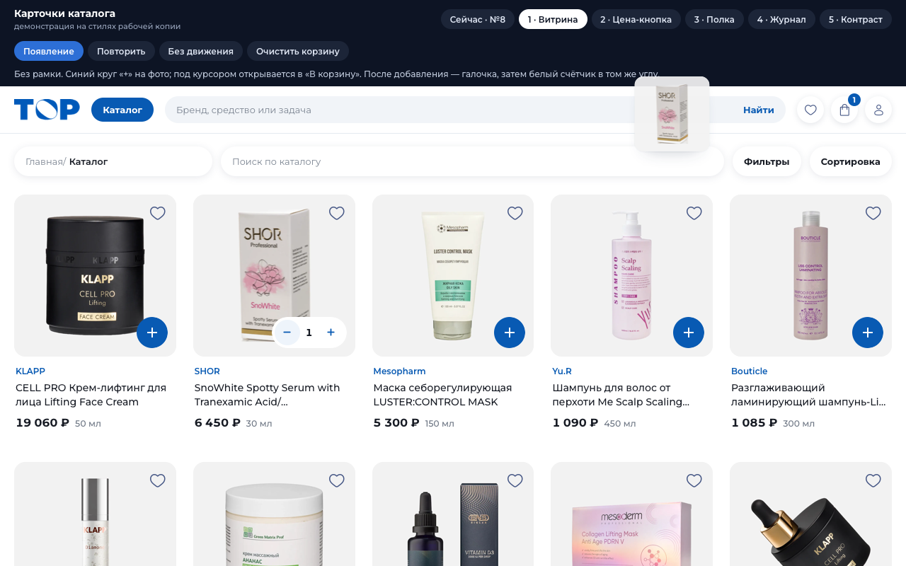

Снимки шоурума на стилях рабочей копии варианта №8: одинаковые экраны 1440×900 и 390×844 (WebKit). Живая версия с переключателем и анимациями — index.html.
Первый ряд каталога; курсор на второй карточке.
Вариант 4 в восьми наборах: скругление, поле фото и значок корзины вместо надписи. Нажмите на снимок — откроется живой шоурум с этим сочетанием. Там же конструктор: 4 скругления × 7 полей × 4 кнопки = 112 сочетаний, любое сохраняется ссылкой.

Каждый экран — настоящий шоурум шириной 390 px: прокручивайте внутри, нажимайте «В корзину», «+», «−» и сердечко. Компьютерный вид со всеми наведениями — index.html, варианты переключаются вверху.
Видео 44 с: каждый вариант — наведение, «В корзину», галочка, полёт фото в корзину, счётчик и «+1». Полёт начинается только после ответа сервера; при системной настройке «Уменьшить движение» его нет, а переходы мгновенные.

Первый экран каталога в каждом варианте. Наведения на телефоне нет, поэтому покупка видна всегда.